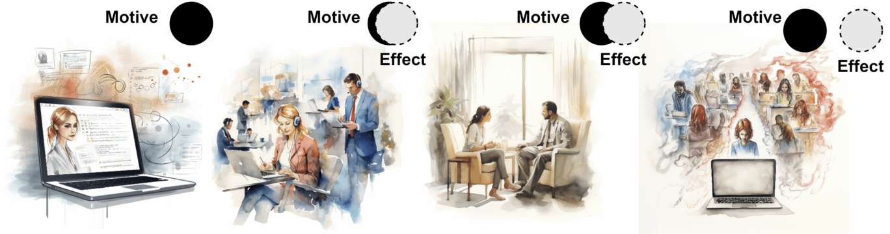
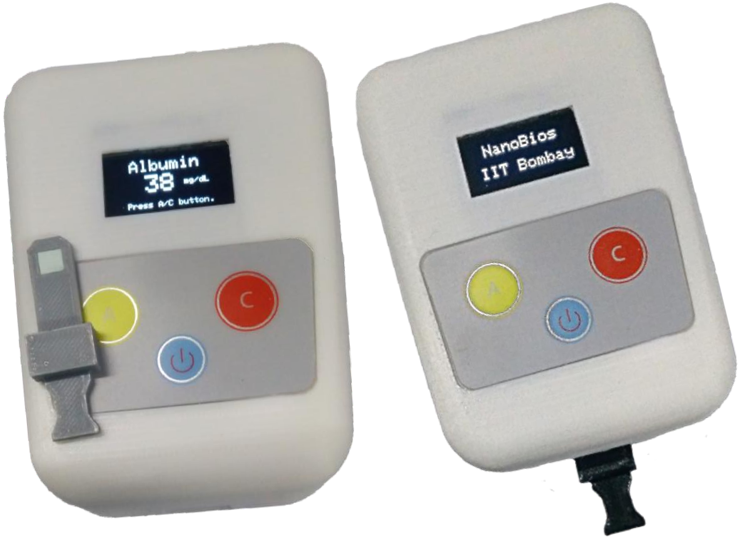

satyam mohla
सत्यम मोहला
サティヤン モーラ
सत्यम मोहला
サティヤン モーラ

Honda Research Institute Europe
Innovation Program Manager
RESEARCH
Publications
2024
- Moral Morpheus: Making digital ethics education more relatable with card games.
Satyam Mohla, Sidharth Mohla et al.
Submitted, ACM GoodIT 2024
2023
- Socio-economic landscape of public use cases of NLP systems amidst AI driven digital transformation
Satyam Mohla, Anupam Guha
Submitted, IEEE Transactions on Human-Machine Systems

- Buildings look like Polygons: Multimodal Footprint Segmentation using Generated Shape Cue Fusion
Sidharth Mohla, Satyam Mohla et al.
In writing
2022
- Teaching CNNs to mimic Human Visual Cognitive Process & regularise Texture-Shape bias
Satyam Mohla, Anshul Nasery, Biplab Banerjee - IEEE International Conference on Acoustics, Speech, and Signal Processing, Singapore 2022
Oral Presentation
2021
- A Material Lens to Investigate the Gendered Impact of the AI Industry
Satyam Mohla, Bishnupriya Bagh, Anupam Guha
- IJCAI 2021 Workshop on AI for Social Good
Short talks
2020
- Multimodal Noisy Segmentation based fragmented burn scars identification in Amazon Rainforest
Satyam Mohla, Sidharth Mohla, Anupam Guha, Biplab Banerjee
- Proceedings of the IEEE International Conference on Systems, Man, and Cybernetics, 2020
- Harvard CRCS AI for Social Good Workshop, 2020
Oral Presentation
- FusAtNet: Dual Attention Based SpectroSpatial Multimodal Fusion Network for Hyperspectral and LiDAR Classification
Satyam Mohla, Shivam Pande, Biplab Banerjee, Subhasis Chaudhuri
- Proceedings of the IEEE/CVF Conference on Computer Vision and Pattern Recognition (CVPR) Workshops, 2020
Oral Presentation
- CognitiveCNN: Mimicking Human Cognitive Models to resolve Texture-Shape Bias
Satyam Mohla, Anshul Nasery, Biplab Banerjee, Subhasis Chaudhuri
- Workshop on Bridging AI and Cognitive Science, International Conference on Learning Representations (ICLR), 2020
Short talks
2019
- Design and Development of Point of Care Test and Optical Reader for Early Screening of Kidney Related Disorder
Pankaj Shivhare, Satyam Mohla, Tejal Dube, Alok Verma, Rohit Srivastava

- Proceedings of the IEEE 13th International Conference on Nano/Molecular Medicine & Engineering (IEEE NANOMED), 2019
Oral Presentation
Best Paper Finalist Award
-
Design and Development of Quantum Dots Infused Films & Optical Reader for Measurement of Blood Electrolytes
Pankaj Shivhare, Sana S Aliya, Satyam Mohla, Samarth Uttam, Rohit Srivastava
- Proceedings of the IEEE 14th Nanotechnology Materials and Devices Conference (IEEE NMDC), 2019
Oral Presentation
Patents
- Point of Care Test & Optical Reader for Early Screening of Kidney Related Disorder, Indian Patent in filing
- Quantum Dots Infused Films based Reader for Measurement of Blood Electrolytes, Indian Patent in filing
Dual Degree Thesis
- Attention Methods in Multimodal Image Fusion: From Human Perception to Sensing Applications
S Mohla, 2020
Dual Degree Thesis, Electrical Engineering & CSRE
Advised by Dr. Subhasis Chaudhari and Dr. Biplab Banerjee
» IIT Bombay Graduate Research Award (URA03)
» Microsoft AI for Earth Grant Award 2020
Bachelor's Project
- Low-cost Biomedical Diagnostic Devices
S Mohla, 2019
Bachelors Project, Electrical Engineering & Bioengineering
Guided by Dr. Rohit Srivastava
» IIT Bombay Undergraduate Research Award (URA01)
» National Budding Innovator Award, NRDC, Ministry of Science & Technology, Govt. Of India